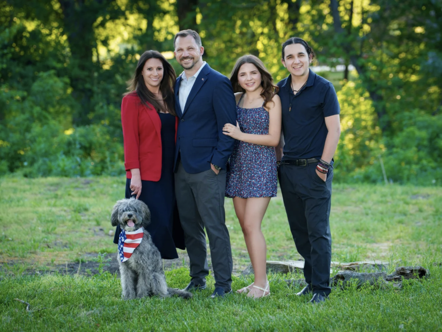
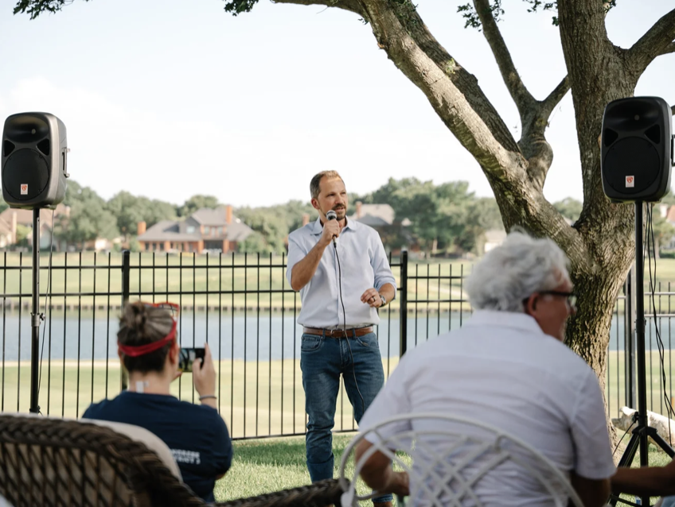

SERVICE BEFORE SELF
Combat Veteran. Defense Executive. Community Leader.
A mission-proven leader ready to serve North Texas.

"I didn't serve my country in combat to come home and watch it be torn apart by politicians who put power before people."

On the TrailEvan Hunt is not a career politician. He is a decorated combat veteran, a successful defense industry executive, and a North Texas community member who has spent his life serving something larger than himself.
University of Pennsylvania · American Military University
McKinney, Texas — 6 years and counting
Grassroots-funded by the people, not PACs
From the cockpit of a B-1 bomber over Afghanistan to the defense industry boardroom — Evan's career is defined by duty, discipline, and decisive leadership.
Retired Lt. Colonel. B-1 Bomber WSO and Electronic Warfare Officer. Led complex missions under fire.
Operation Enduring Freedom (Afghanistan) and Operation New Dawn (Iraq). He didn't just talk — he served.
California Air National Guard — Iraq/Afghanistan support and disaster recovery operations.
Post-service career with Raytheon and major defense firms. National security and procurement expertise.
Democrat Taylor Rehmet — an Air Force veteran — flipped TX Senate District 9 by 14 points in a seat Trump won by 17. A 32-point swing. The model works.
Rooted in the practical needs of North Texas families — not ideological talking points.
Unwavering commitment to NATO alliances. A combat veteran who understands real threats — not political posturing.
Lower prescription prices. Eliminate pharmaceutical middlemen. Protect Medicaid and Medicare from devastating cuts.
Fully fund public schools. Oppose voucher schemes that divert resources from community schools.
Fair wages. Housing affordability for North Texas's fastest-growing communities.
Strong, strategic border security with humane immigration reform. A veteran's approach.
Defend the Constitution without exception. Protect democratic institutions.
Smart energy transition that protects existing jobs and creates new opportunities.
Full funding and accountability for veterans' services. This isn't political — it's personal.
TX-03 deserves a representative who serves the people — not one who makes headlines for all the wrong reasons.
Every contrast is authentic. Every attack ad writes itself. TX-03 is ready for real leadership.
The environment is there. The candidate is there.
The only variable is resources.
Contribute by check:
Make Checks Payable to: Elect Evan Hunt
P.O. Box 6402
McKinney, TX 75071
TX-03 is a direct path to reclaiming the House majority.
A victory proves Texas is competitive at the congressional level — today.
This seat was drawn to be unwinnable. Winning it sends a message.
Evan's profile is the template for competing in red-leaning territory.
Paid for by Evan Hunt for Congress · ElectEvanHunt.com · Not authorized by any candidate committee